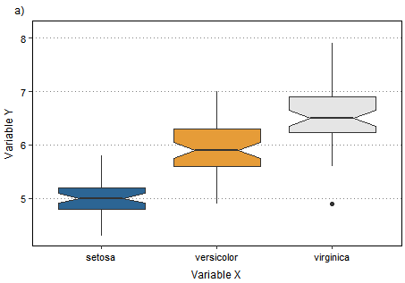

text.size <- 8
title.size <- 9
strip.size <- 9
point.size <- 1
line.size <- 0.3
dot.size <- 1Re-usable code for quick data visualization with ggplot
ggplot2
Visualizing data is an important part of communicating results, but it can turn into a tricky coding process when you need to plot your data in a very specific way. Not even talking if you expect having graphs with a similar looking along all your results.
This is the quick way I use to plot my data to get a consistent data visualization for all my related results.
First of all, I start by specifying the common settings I want for the aesthetics of all my graphs. This first bunch of setting specify font, line and dot size.
The second bunch of objects specify different color palettes for graphs with different amount of groups (from 1 to 6). I designed this palette with complementary colors following the recommendations from Lisa Charlotte Muth in “How to pick more beautiful colors for your data visualizations”. If you design your own palettes don`t hesitate to share with me :)
color1 <- "#2C6594"
color2 <- "#239081"
color3 <- "#2AAA51"
color4 <- "#E69C38"
color5 <- "#E67E38"
color6 <- "#E64C38"
color7 <- "gray90"
palette1 <- c(color1)
palette2 <- c(color1, color4)
palette3 <- c(color1, color4, color7)
palette4 <- c(color1, color2, color4, color5)
palette5 <- c(color1, color2, color4, color5, color7)
palette6 <- c(color1, color2, color3, color4, color5, color6)This settings will be just created once at the beginning of you script, and will be applied to as many graphs as you create getting a consistent data visualization.
Now that the common settings have been already specified we can focus on the data we want to plot. I will use the public dataset iris for this example. I start creating three objects, one for the dataset and two more for the X and Y variables. These are the only three objects that need to be modified to adapt the code to different datasets.
And… here we go a custom ggplot code to plot your data in a consistent way with your favourite settings in just a minute. The code include all settings previously specified in our objects to easily change several values with a single modification.
library(ggplot2)
plot1 <- ggplot(data=df, aes(x=variablex, y=variabley, fill = variablex))+
geom_boxplot(notch=T)+
scale_x_discrete(name = "Variable X")+
scale_y_continuous(name = "Variable Y", limits = c(min(variabley),max(variabley)*1.03))+
scale_fill_manual(name = "Variable X", values = palette3)+
ggtitle("a)")+
theme(axis.title.x = element_text(size=title.size, color = 'black', margin=margin(t=6, r=0, b=0, l=0)),
axis.title.y = element_text(size=title.size, color = 'black', margin=margin(t=0, r=6, b=0, l=0)),
axis.text.x = element_text(size=text.size, color = 'black'),
axis.text.y = element_text(size=text.size, colour = 'black'),
axis.line=element_line(size=line.size, colour='black'),
axis.ticks.x = element_line(),
axis.ticks.y = element_line(),
panel.grid.major.x = element_blank(),
panel.grid.major.y = element_line(linewidth = line.size, linetype = 'dotted', color = "grey50"),
panel.grid.minor = element_blank(),
strip.text.x = element_text(size = strip.size),
strip.background = element_blank(),
panel.border = element_rect(fill = NA, size = line.size),
panel.background = element_blank(),
legend.title = element_text(size = title.size, margin=margin(t=0, r=0, b=0, l=0)),
legend.text = element_text(size = text.size),
legend.position="none",
legend.key.size = unit(0.2, "in"),
legend.margin=unit(c(0.1,0.1,0.1,0.1),"cm"),
plot.title = element_text(size = title.size, face = "plain", hjust = -0.05, vjust = 0),
plot.margin=unit(c(0.1,0.1,0.1,0.1), "cm"))
plot1
If you want a graph different than a boxplot just substitute geom_boxplot() by geom_bar() for a barplot or geom_point() for a scatterplot. You can easily check all different options in the ggplot2 Cheatsheet.
Looking forward to hearing your ideas on how to enhance the code for a more efficient data visualization. Don’t hesitate to get in touch with me!
You can find here the whole code in a single code block here.
# SETTINGS FOR SIZE
text.size <- 8
title.size <- 9
strip.size <- 9
point.size <- 1
line.size <- 0.3
dot.size <- 1
#PALETTES
color1 <- "#2C6594"
color2 <- "#239081"
color3 <- "#2AAA51"
color4 <- "#E69C38"
color5 <- "#E67E38"
color6 <- "#E64C38"
color7 <- "gray90"
palette1 <- c(color1)
palette2 <- c(color1, color4)
palette3 <- c(color1, color4, color7)
palette4 <- c(color1, color2, color4, color5)
palette5 <- c(color1, color2, color4, color5, color7)
palette6 <- c(color1, color2, color3, color4, color5, color6)
#DATA
library(datasets)
data(iris)
df <- iris
variabley <- df$Sepal.Length
variablex <- df$Species
#PLOT CODE
library(ggplot2)
plot1 <- ggplot(data=df, aes(x=variablex, y=variabley, fill = variablex))+
geom_boxplot(notch=T)+
scale_x_discrete(name = "Variable X")+
scale_y_continuous(name = "Variable Y", limits = c(min(variabley),max(variabley)*1.03))+
scale_fill_manual(name = "Variable X", values = palette3)+
ggtitle("a)")+
theme(axis.title.x = element_text(size=title.size, color = 'black', margin=margin(t=6, r=0, b=0, l=0)),
axis.title.y = element_text(size=title.size, color = 'black', margin=margin(t=0, r=6, b=0, l=0)),
axis.text.x = element_text(size=text.size, color = 'black'),
axis.text.y = element_text(size=text.size, colour = 'black'),
axis.line=element_line(size=line.size, colour='black'),
axis.ticks.x = element_line(),
axis.ticks.y = element_line(),
panel.grid.major.x = element_blank(),
panel.grid.major.y = element_line(linewidth = line.size, linetype = 'dotted', color = "grey50"),
panel.grid.minor = element_blank(),
strip.text.x = element_text(size = strip.size),
strip.background = element_blank(),
panel.border = element_rect(fill = NA, size = line.size),
panel.background = element_blank(),
legend.title = element_text(size = title.size, margin=margin(t=0, r=0, b=0, l=0)),
legend.text = element_text(size = text.size),
legend.position="none",
legend.key.size = unit(0.2, "in"),
legend.margin=unit(c(0.1,0.1,0.1,0.1),"cm"),
plot.title = element_text(size = title.size, face = "plain", hjust = -0.03, vjust = 0),
plot.margin=unit(c(0.1,0.1,0.1,0.1), "cm"))Citation
BibTeX citation:
@online{sánchez-garcía2025,
author = {Sánchez-García, Daniel},
title = {Re-Usable Code for Quick Data Visualization with `Ggplot`},
date = {2025-06-16},
url = {https://danielsangarci.netlify.app/posts/post_trial/},
langid = {en}
}
For attribution, please cite this work as:
Sánchez-García, Daniel. 2025. “Re-Usable Code for Quick Data
Visualization with `Ggplot`.” June 16, 2025. https://danielsangarci.netlify.app/posts/post_trial/.